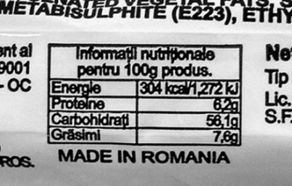
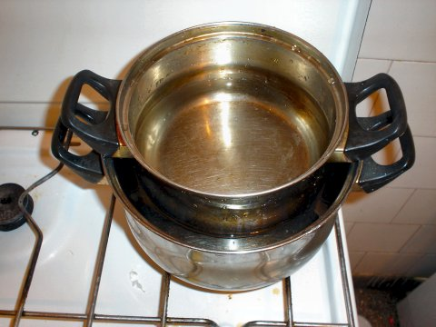
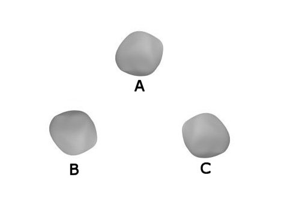
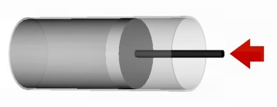
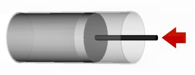
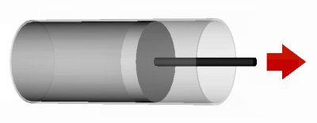

Un pachet de biscuiţi este un "pachet" de energie. Pe ambalajul pachetului este trecută valoarea energetică pentru 100 g (figura 1).

Figura 1. Informaţii înscrise pe un pachet de biscuiţi.
Răspuns parţial: Valoarea energetică exprimată în kcal pare corectă (are acelaşi ordin de mărime cu cea pentru 100 g de alune sau ciocolată), însă valoarea exprimată în kJ este mult prea mică!
Două cratiţe cu apă sunt aşezate una în cealaltă, ca în figura 2, deasupra flăcării unei maşini de gătit. Pereţii cratiţelor nu se ating.

Figura 2. Două cratiţe cu apă sunt aşezate una în cealaltă.
Te aştepţi ca apa din cratiţa mică să ajungă la fierbere?
Răspuns: Apa din cratiţa mică primeşte căldură de la apa din cratiţa mare. Orice transfer de energie sub formă de căldură necesită diferenţă de temperatură. Chiar dacă apa din cratiţa mare atinge 100°C şi fierbe, temperatura apei din cratiţa mică rămâne tot timpul inferioară celei de fierbere. Apa din cratiţa mică nu ajunge la fierbere. Cu primul prilej, încearcă!
Transcrie pe caiet reprezentarea schematică a trei corpuri, ca cea din figura 3.

Figura 3. Reprezentarea schematică a trei corpuri.
Corpul A are temperatura cea mai mare, iar corpul C are temperatura cea mai mică.
Reprezintă pe caiet, prin săgeţi, transferurile de energie sub formă de căldură între cele trei corpuri.
Cum se modifică în timp, temperatura fiecăruia dintre cele trei corpuri?
Răspuns parţial: Corpul A cedează căldură celorlalte două, deoarece are temperatura mai mare decât oricare dintre acestea.
Un gaz este comprimat într−un cilindru cu piston, primind lucru mecanic (figura 4).
 

Figura 4. Comprimarea unui gaz într−un cilindru cu piston.
a. Ce te aştepţi să se întâmple cu energia cinetică a unei molecule a gazului care este lovită de piston? Compară procesul cu cel în care un jucător de tenis loveşte mingea care se apropie de el.
b. Ce te aştepţi să se întâmple cu temperatura gazului?
Răspuns parţial: a. Creşte.
Un gaz este închis într−un cilindru cu piston. Pistonul este "tras" afară din cilindru, gazul efectuând lucru mecanic (figura 5).

Figura 5. Destinderea gazului dintr−un cilindru cu piston.
a. Ce te aştepţi să se întâmple cu energia cinetică a unei molecule a gazului care loveşte pistonul? Compară procesul cu cel în care un jucător de tenis "stopează" mingea.
b. Ce te aştepţi să se întâmple cu temperatura gazului?
Expresia principiului I al termodinamicii îţi permite să "prinzi" ca într−un cleşte variaţia energiei interne a unui sistem, lucrul mecanic şi cantitatea de căldură transferate între sistem şi mediul său: cunoscând două dintre aceste mărimi, o poţi calcula imediat pe cea de−a treia!
Tabelul 1 prezintă valorile cunoscute pentru cinci procese diferite.
Tabelul 1. Valori cunoscute pentru cinci procese diferite.
| Procesul | Q
(J) |
L
(J) |
ΔU
(J) |
| 1 | 1200 | -200 | |
| 2 | 670 | 670 | |
| 3 | 400 | 400 | |
| 4 | 400 | 300 | |
| 5 | 0 | 300 |
Transcrie pe caiet acest tabel şi completează−l!